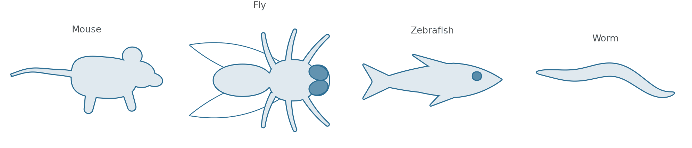
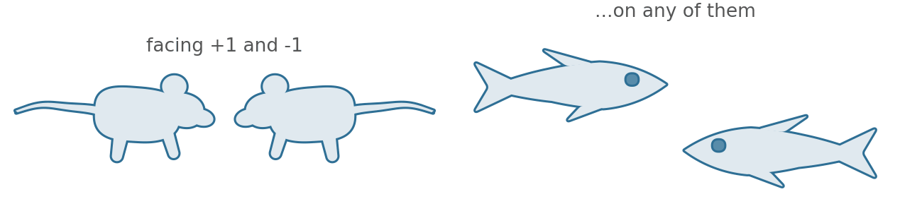
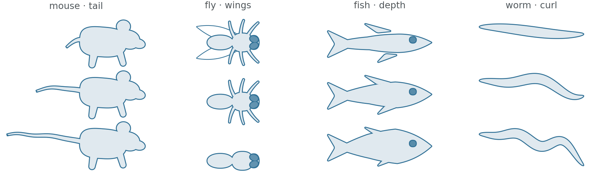
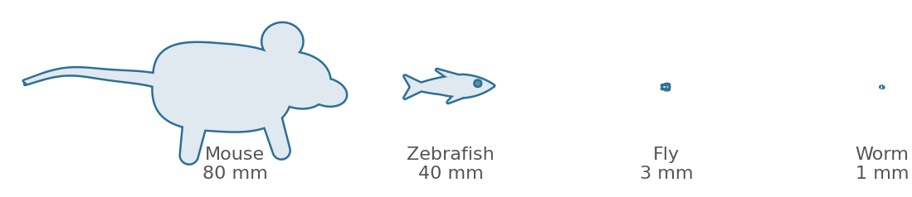
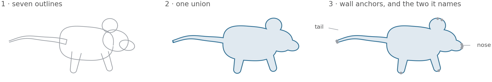

All examples Animals
Model organisms
Mouse, fly, zebrafish and worm as silhouettes — and facing whichever way your panel needs.
animals.Mouseanimals.Flyanimals.Zebrafishanimals.Worm

An outline is enough. At the size a methods figure prints one of these, detail is bytes and attention spent on nothing a reader sees.
Facing either way

One knob each

Drawn size, and true size

How one is built

- Seven outlines — four bodies, two legs and a tapered tube for the tail.
- One union. Nothing else makes them a mouse rather than a pile of shapes.
- Anchors, so a label or a connector can find the nose without measuring anything.
Drawing one
import biodraw as bd
mouse = bd.animals.Mouse(
tail=0.78, # tail length against a body of 1 — a stub is a vole
ear=1.0,
facing=-1, # mirrored, so it faces into your panel
at=(0.0, 0.0),
)
mouse.draw(ax=ax, wall_lw=1.1)
mouse.fit(ax, pad=0.12)
fish = bd.animals.Zebrafish(depth=1.35) # a deeper-bodied fish
fly = bd.animals.Fly(wings=False) # a wingless mutant, in one word
worm = bd.animals.Worm(curl=0.22, waves=2.2)
# Every animal exposes anchors: `wall` all round, plus its own named ones.
ax.annotate("wild type", xy=mouse.anchor("nose").xy,
xytext=mouse.anchor("nose").offset(0.35))Every figure above is output, not a stored asset —
drawn by animals/build.py, in Python, on a matplotlib axes.